Ohrid
One of Europe's oldest lakes, UNESCO-listed, ringed by frescoed churches. The old town is walkable, the water is clean into September, and you'll want a night more than you booked.
Explore
Every place we take people, plotted on a map — plus what to eat, what's still living in the forests, and the traditions that never stopped.
Where to go
Eight places most trips are built around, and fourteen more that reward a detour.
One of Europe's oldest lakes, UNESCO-listed, ringed by frescoed churches. The old town is walkable, the water is clean into September, and you'll want a night more than you booked.

Ottoman bazaar on one bank, a modernist rebuild after the 1963 earthquake on the other, and a lot of large monuments in between. Mother Teresa was born here.

Thirty minutes from Skopje: a dammed gorge on the Treska with kayak hire, a boat trip into Vrelo Cave, and paths along the cliffs.

The western national park — high peaks, a reservoir lake with a half-drowned church, the country's main ski slopes, and the best odds of seeing something wild.

The "City of Consuls" — a long neoclassical café street, the Roman ruins of Heraclea Lyncestis, and Pelister National Park rising right behind.

The highest town in the country, and a well-kept 19th-century one. People come up to paraglide off the ridge and to get above the heat.
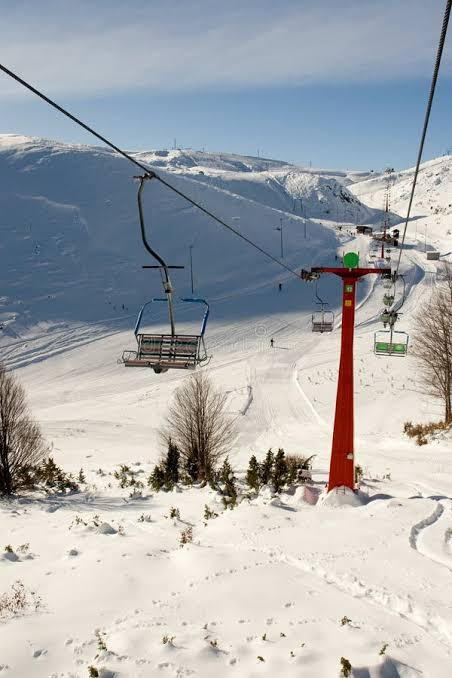
A ski and hiking resort on the Šar Mountains plateau above Tetovo — a chairlift up into open, high country.

National park on Baba Mountain — the glacial "Pelister's Eyes" lakes, stands of rare molika pine, and a long view down over Bitola.
Everything above, plotted. Click a marker for a one-line note; green markers are the national parks and reserves.
What to eat
Balkan, Ottoman and Mediterranean cooking, mostly in the same meal — slow, cheap, and more than you can finish.
The national dish: white beans baked with paprika and onion in an unglazed clay pot. It started as a Friday and fasting dish, so the classic version has no meat.
Cheapest in Skopje's Old Bazaar
Roasted red peppers cooked down into a relish, smooth or chunky, eaten with everything. It carries a protected-origin label; the best peppers come from Strumica.
Made at home every autumn
Pastrmka, grilled or smoked, eaten on the water. Some native species are protected, so you'll often be served a farmed or introduced one.
Lakeside in Ohrid & Struga
Tomato, cucumber and onion under a thick layer of grated sirenje. On every table from June to October.
Everywhere, all summer
Little grilled fingers of minced meat with soft lepinja bread, raw onion and a spoon of ajvar. A portion is ten.
Any grill house (skara)
"Village meat" — a clay-pot stew of pork, mushrooms and peppers that's still bubbling when it reaches you.
Mountain taverns
Coiled filo with cheese, meat or spinach, sold by the slice. The standard breakfast, best before 10am with a drinking yoghurt.
Every bakery
Ottoman-era sweets — layered nut pastry, syrup-soaked fried dough — with a small, strong coffee to cut it.
Bazaar sweet shops
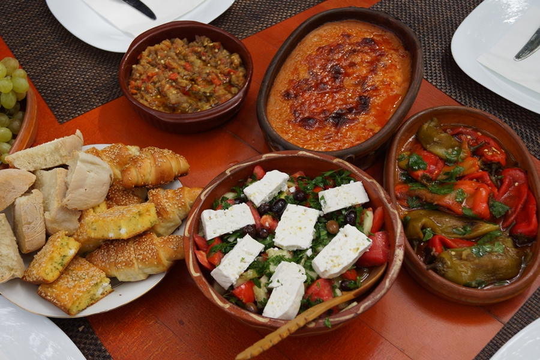
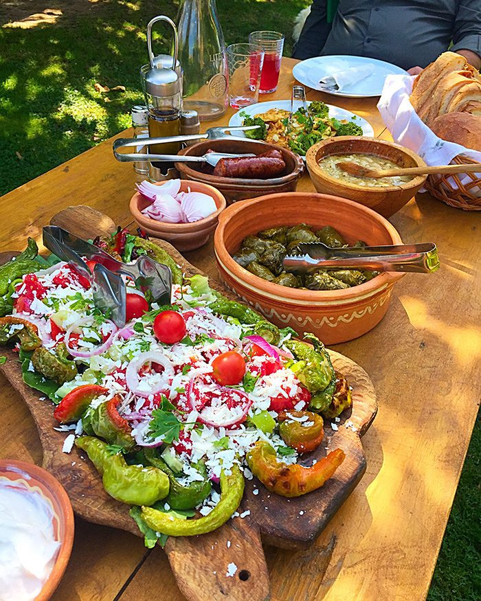
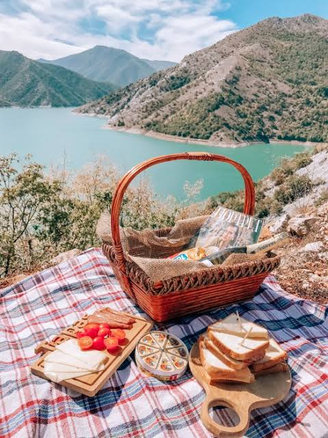
Wild Macedonia
About a third of the country is forest and mountain, and some of Europe's last big carnivores are still in it.
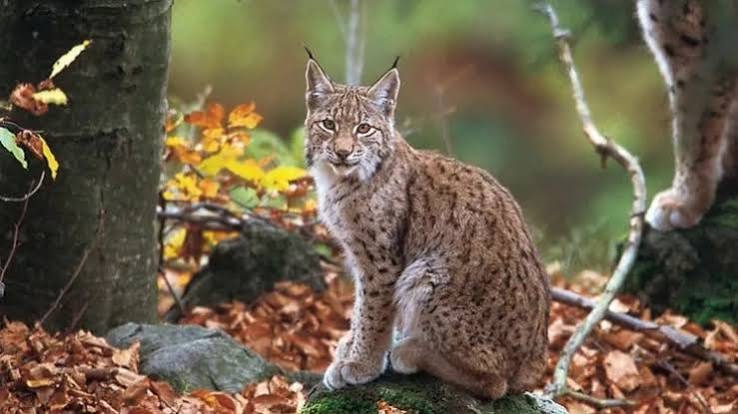
Critically endangered, and a national symbol — it's on the coin. Perhaps a few dozen are left, mostly in Mavrovo and along the Albanian border. Nobody expects to see one.
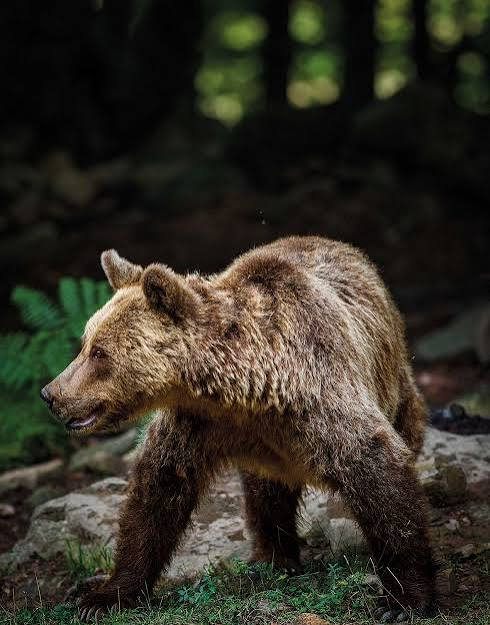
A few hundred, in the western and northern ranges. This is why the guides talk loudly on certain trails.
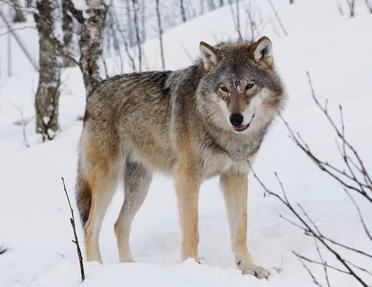
Widespread, almost never seen. You're far more likely to hear one at night, or cross tracks in fresh snow.
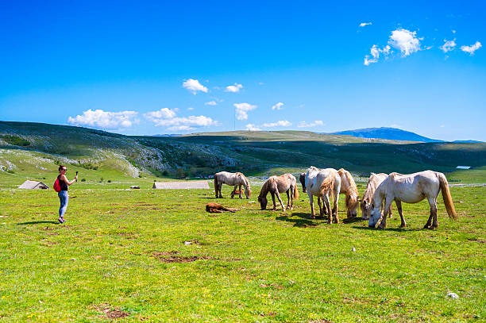
Free-roaming herds graze the high pastures of Galičica between Ohrid and Prespa all summer. These you can usually find.
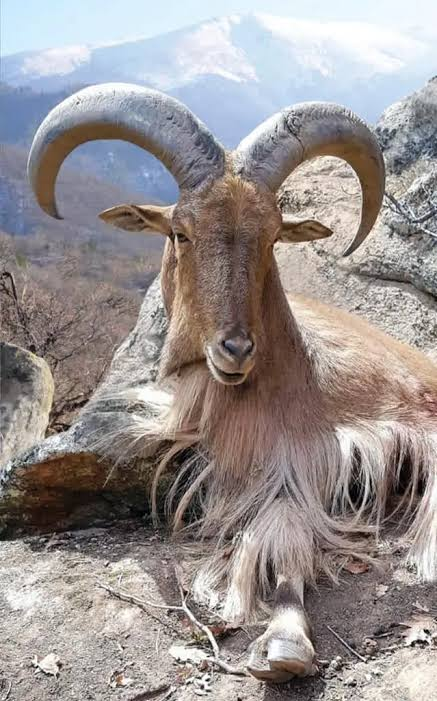
Sure-footed on the cliffs of Matka, Demir Kapija and the Šar. Look up.
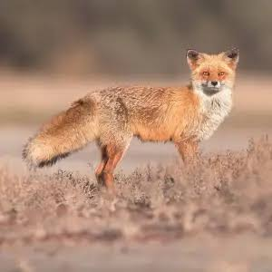
Red fox, wild boar, golden jackal, tortoises around Prespa, and pelicans and herons out on the lakes.
Living traditions
Orthodox, Ottoman and village culture, layered for centuries — and none of it behind glass.
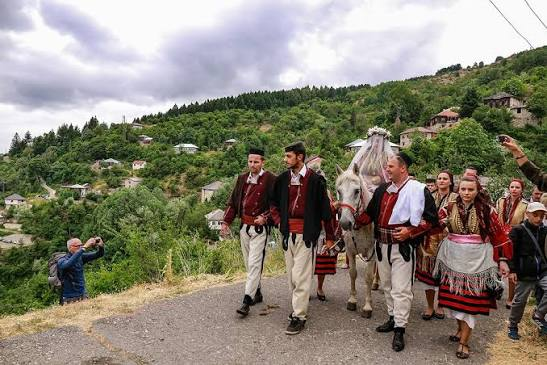
Every July, one couple is married in full traditional dress in this mountain village near Mavrovo — drums, oro dancing, and a horseback procession the whole valley turns out for.
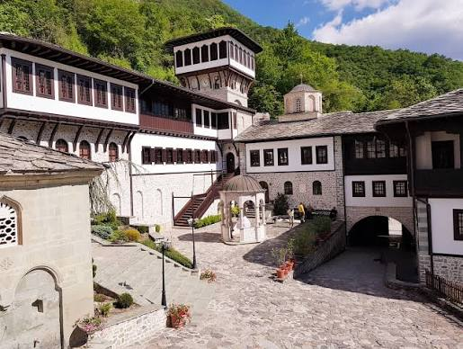
Above the Radika river near Mavrovo. Its wooden iconostasis — years of work by 19th-century master carvers — is one of the most intricate anywhere.
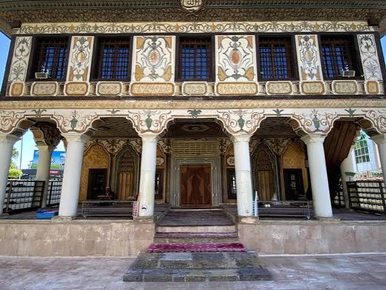
Tetovo's Šarena Džamija, from 1438 and repainted in 1833 — every surface covered in flowers, landscapes and geometry, which is unusual for a mosque.
Journal
Route ideas, seasonal advice, and the occasional long-lunch write-up.
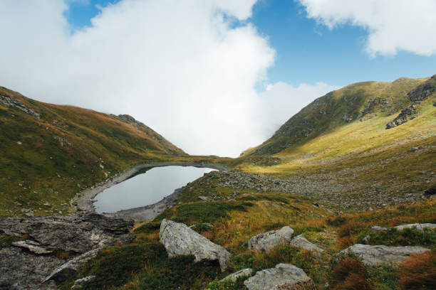
Hut to hut across Baba Mountain, finishing at the two glacial lakes people call Pelister's Eyes.
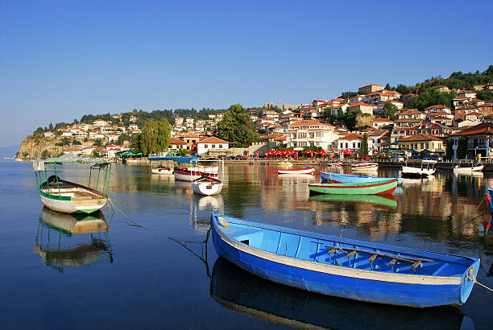
Where to start before the crowds, which church to keep for the evening light, and the honest answer on the trout.
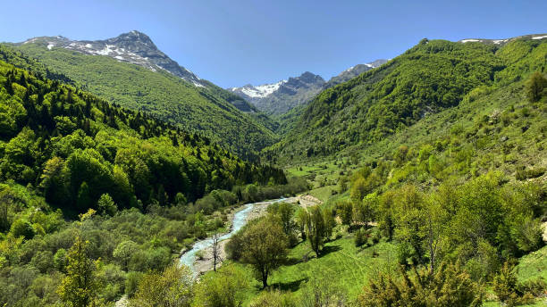
Wildflowers in May, swimming in September, snow at Mavrovo from December — a month-by-month steer.